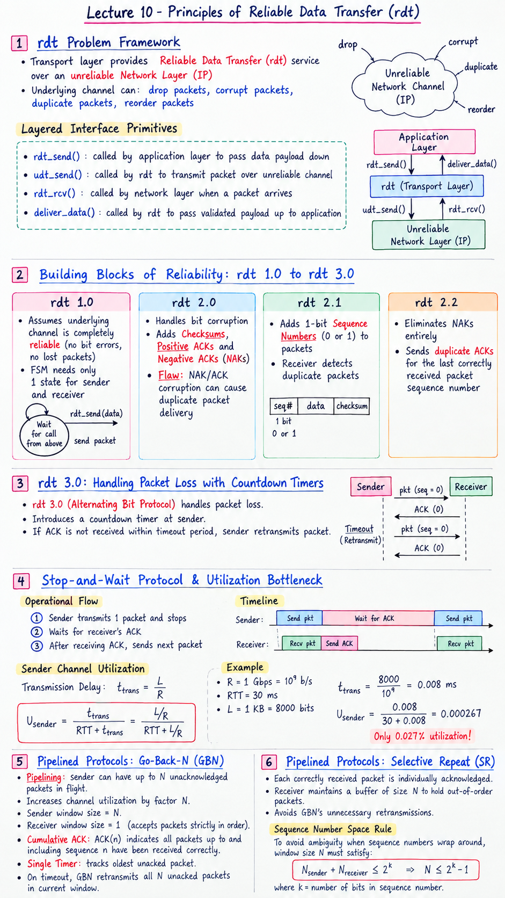

Short Notes & Visual Summary
Handwritten / quick summary notes for Lecture 10:

Click image to open high-resolution version in new tab
The Reliable Data Transfer (rdt) Problem Framework
1.1 Unreliable Network Channel Model
The core challenge of the Transport Layer is providing a Reliable Data Transfer (rdt) service on top of an inherently unreliable underlying Network Layer (IP) that can drop, corrupt, duplicate, or reorder packets.
1.2 Layered Interface Primitives
rdt_send(): Called by high-level app layer to pass data payload down.udt_send(): Called by rdt protocol to transmit packet over unreliable channel.rdt_rcv(): Called by network layer when a packet arrives at receiving host.deliver_data(): Called by rdt to pass validated payload up to application.
Building Blocks of Reliability: rdt 1.0 to rdt 3.0
2.1 rdt 1.0: Reliable Channel Baseline
Assumes underlying channel is completely reliable (no bit errors, no lost packets). FSM needs only 1 state for sender and receiver.
2.2 rdt 2.0/2.1/2.2: Handling Bit Corruption
- rdt 2.0: Adds Checksums, Positive ACKs, and Negative ACKs (NAKs). Flaw: NAK/ACK corruption causes duplicate packet delivery.
- rdt 2.1: Adds 1-bit Sequence Numbers (0 or 1) to packets. Receiver detects duplicate packets.
- rdt 2.2: Eliminates NAKs entirely by sending duplicate ACKs for the last correctly received packet sequence number.
2.3 rdt 3.0: Handling Packet Loss with Countdown Timers
rdt 3.0 (Alternating Bit Protocol) handles packet loss by introducing a countdown timer at the sender. If ACK is not received within timeout period, the sender retransmits packet.
Stop-and-Wait Protocol & Utilization Bottleneck
3.1 Stop-and-Wait Operational Flow
In rdt 3.0, the sender transmits 1 packet and stops, waiting for receiver's ACK before transmitting the next packet.
3.2 Sender Channel Utilization Formula
$$\text{Transmission Delay } t_{\text{trans}} = \frac{L}{R}$$ $$U_{\text{sender}} = \frac{t_{\text{trans}}}{\text{RTT} + t_{\text{trans}}} = \frac{L / R}{\text{RTT} + L / R}$$3.3 Mathematical Example Breakdown
Consider a 1 Gbps link ($R = 10^9$ b/s), 30 ms RTT, 1 KB packet ($L = 8000$ bits):
$$t_{\text{trans}} = \frac{8000}{10^9} = 0.008 \text{ ms}$$ $$U_{\text{sender}} = \frac{0.008}{30 + 0.008} = 0.000267 \quad (\text{Only } 0.027\% \text{ utilization!})$$Pipelined Protocols: Go-Back-N (GBN)
4.1 Pipelining & Sliding Window Concept
Pipelining allows the sender to have up to $N$ unacknowledged packets in flight simultaneously, increasing channel utilization by factor $N$.
4.2 Go-Back-N Sender & Receiver Windows
Sender window size is $N$. The receiver has a window size of 1 (accepts packets strictly in order).
4.3 Cumulative ACKs & Timeout Retransmissions
- Cumulative ACK: ACK($n$) indicates all packets up to and including sequence $n$ have been received correctly.
- Single Timer: Timer tracks oldest unacked packet. On timeout, GBN retransmits all $N$ unacked packets in current window.
Pipelined Protocols: Selective Repeat (SR)
5.1 Selective Repeat Individual ACKs
Selective Repeat (SR) avoids GBN's unnecessary retransmissions by having the receiver individually acknowledge every correctly received packet.
5.2 Out-of-Order Buffering
The SR receiver maintains a buffer of size $N$ to hold out-of-order packets until missing lower-sequence packets arrive.
5.3 Sequence Number Space Constraint
To avoid ambiguity when sequence numbers wrap around, window size $N$ must satisfy:
$$N_{\text{sender}} + N_{\text{receiver}} \le 2^k \implies N \le 2^{k-1}$$Original PDF Notes
Below is the original PDF document for reference: